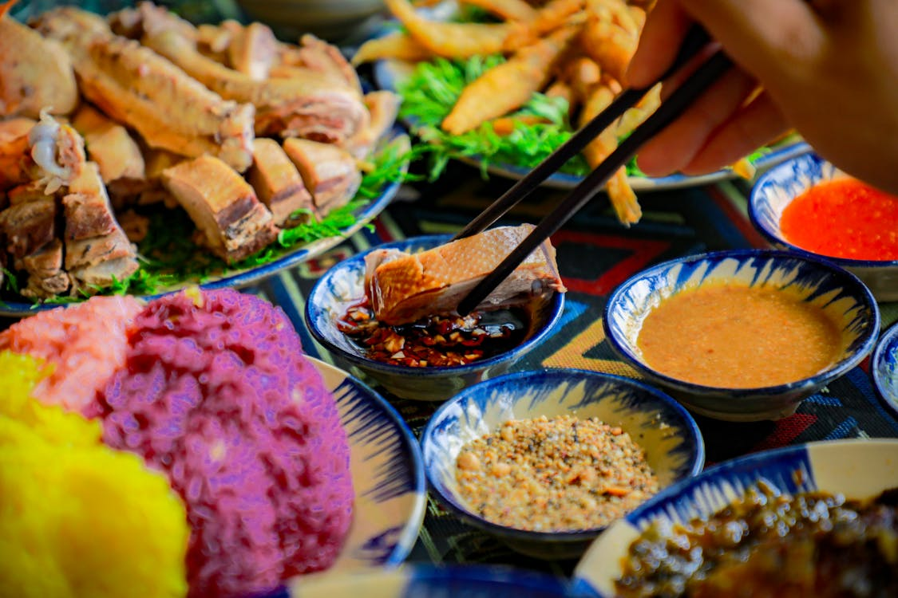
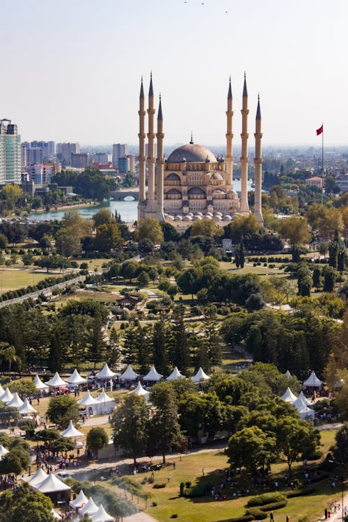

Cultura Urbana
A cidade é um caldeirão de culturas, onde diversas tradições se encontram e se misturam.

A cidade é um caldeirão de culturas, onde diversas tradições se encontram e se misturam.
A culinária da cidade reflete sua diversidade e história, com pratos únicos que encantam os paladares.
A cidade está sempre viva com eventos que celebram a arte, música e tradições locais.
